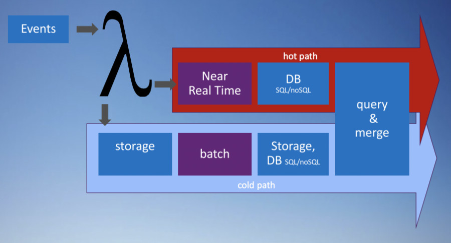
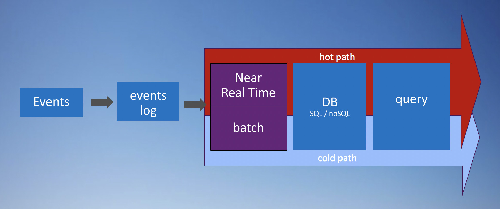
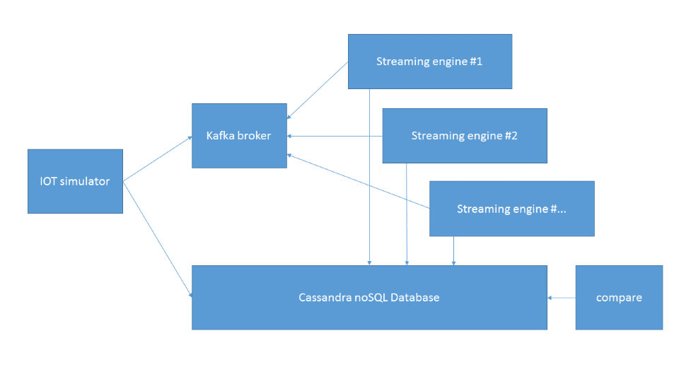

Une architecture Bigdata classique a pour objet de consolider des données de toutes formes et origine, et de transformer celle-ci pour les exposer dans une base de donnée. Cette dernière quel que soit son type a pour vocation de permettre l'exposition des données soit par une API ou un outil de BI et de Dataviz. Ces architectures sont historiquement très orientée sur des traitements de type batch, avec par exemple un traitement quotidien d'un ensemble de fichiers reçus. Les transactions de la journée sont intégrée dans le datalake, pour être traitées, et synthétisées dans de jolis dashboards. Cette approche, si elle est très longtemps restée satisfaisante a très vite été challengée par la nécessité de disposer d'accélérer la vitesse de capture des données et de réduire la latence inhérente à leur mise à disposition dans une API ou tout autre dispositif. L'émergence de scénarios temps réels avec par exemple de l'IOT, ou même de la capture de tickets de caisse fait qu'il est devenu très compliqué de traiter avec un moteur unique du Batch et ce nouveau type de Flux. Des optimisations ont été tentée pour réduire la taille des fenêtres de batch, et tendre vers du temps réel, mais la réalité est que 2 types de moteurs ont commencé à co-exister pour résoudre cette équation. D'un coté un moteur batch et de l'autre un moteur de stream.
L'architecture lambda : 
C'est ainsi qu'est née l'architecture Lambda dont le nom provient du fait qu'une donnée lors de son arrivée est écrite dans deux directions distinctes. Elle a été présentée pour la première fois par Nathan Marz en 2013. A l'époque il était en charge de l'infrastructure data de Twitter et devait gérer à la fois le stockage de l'historique des twitts et l'exploitation à chaud de ceux-ci pour les trends notamment. Il a mis en avant dans ses publications les notions de "batch layer", de "speed layer" et de "serving layer".
Très vite les architectures Lambda ont été couplées à un broker de message tel que Flume ou Kafka. Ce dernier a la faculté de pouvoir absorder tous les flux en temps réel, de les bufferiser, et de permettre à de multiple moteurs de les consommer. Afin de résister à une forte charge, Kafka présente une architecture partitionnée et distribuée.
L'architecture Lambda, si elle permet de satisfaire les objectifs de batch et de temps réel, a très vite été critiquée par la communauté. La complexité inhérente à l'ensemble des technologies mises en oeuvre, et le fait de devoir maintenir deux bases de code a été réellement un handicap. La séparation des moteurs entre batch et streaming amène des divergences de résultat plus ou moins évidentes. Les tentatives de mise en oeuvre d'outils d'abstraction pour avoir une base de code ont été jugées trop impactantes sur les performances et les fonctionnalités des différents moteurs utilisés.
Spark a dès sa conception initiale tenté de résoudre ce problème en offrant une capacité de traitement batch (spark core) et micro-batch (spark streaming). Si la base de code est assez commune, il y a quand même deux moteurs de traitement à maintenir, ce qui est loin d'être idéal. Imaginons que nous avons un flux de donnée sur lequel est calculé 3 indicateurs en temps réel, et que nous souhaitions en ajouter un quatrième. Il va falloir implémenter ce nouvel indicateur sur le flux "streaming", mais aussi sur le moteur "batch" afin de mettre à jour l'historique.
Les ingénieurs de Linkedin se sont très tôt intéressés aux problématiques que nous venons d'aborder. Leur conclusion a été sans appel, la solution était de considérer toutes les données comme un stream, en rendant celui-ci persistant. Le fait de prendre un stream et de le stocker sous forme de log est le fondement même de Kafka. Kafka au delà de ses capacités de message broker permet de stocker l'historique du stream et de le re-dérouler autant que nécessaire. Une seule et unique source de données est utilisable pour les traitements "stream" et les traitements "batch". Au final, on peut considérer que le batch n'est qu'un cas particulier de stream.
L'architecture non lambda : 
Faire des opérations de comptage simple sur les streams qui traversent le broker de message est en théorie très simple. Le traitement de ce type de donnée se fait majoritairement en appliquant des fenêtres sur le flux d'évènements. Par exemple à t = 20 secondes, on va traiter les données qui sont arrivées entre la 15ème et la 20ème seconde. Différents types de fenêtres sont possibles, elle peuvent être fixes, ou glissantes, dans ce dernier cas, toutes les 5 secondes, on traite une accumulation sur 15 secondes. Dans la réalité le broker est distribué et va donc induire des latences dans la propagation des messages. Des coupures réseau peuvent induire la perte de certains messages, ou de traitements en double. On peut parfaitement avoir des évènements qui apparaissent à la 17ème seconde mais qui aient été produits à t=7. C'est sur ce dernier point que repose l'un des gros challenges des traitements de streams, que nous allons essayer d'adresser entre autres ici.
Le projet Boontadata-streams est un jeu de composant qui permet de simuler une architecture de streaming et de pouvoir monter très rapidement un lab pour les tester. Cette approche permet de dérouler un ou plusieurs use-cases sur différents types d'architecture et de tester celles-ci. L'architecture de la plateforme basée sur Docker permet d'activer très vite les différents moteurs pour exécuter les scénarios de test.
On a un générateur de données, une base Cassandra, un Cluster Kafka, plusieurs moteurs de traitements de stream (Spark, Flink, Storm...), et pour finir un comparateur de résultat. Le générateur va créer un flux de messages de type IOT, et les insérer dans un topic Kafka. Le générateur va aussi réaliser des comptages sur des fenêtres de temps, et insérer ceux-ci dans une base Cassandra afin de disposer d'une version de la vérité. De plus, le générateur a un comportement tout à fait reproductible, et permet de comparer les résultats obtenus lors d'exécutions avec des moteurs différents.

C'est un projet vivant, qui n'attend que vos contributions, twittez @boontadata ou allez sur le Github. Cette série de blog va entrer plus dans le détail de l'utilisation du projet, et va vous permettre de découvrir les spécificités des différents use-cases implémentés.